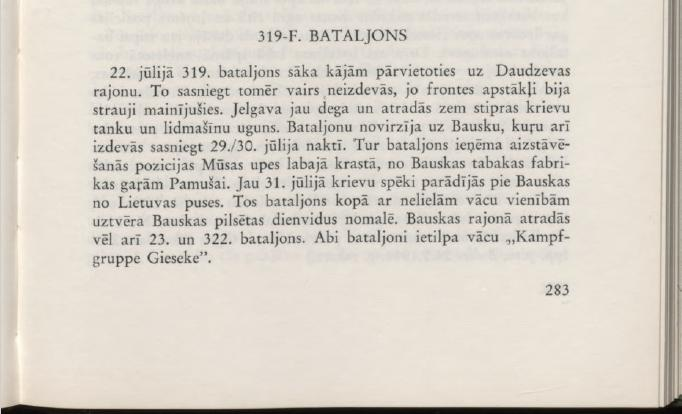
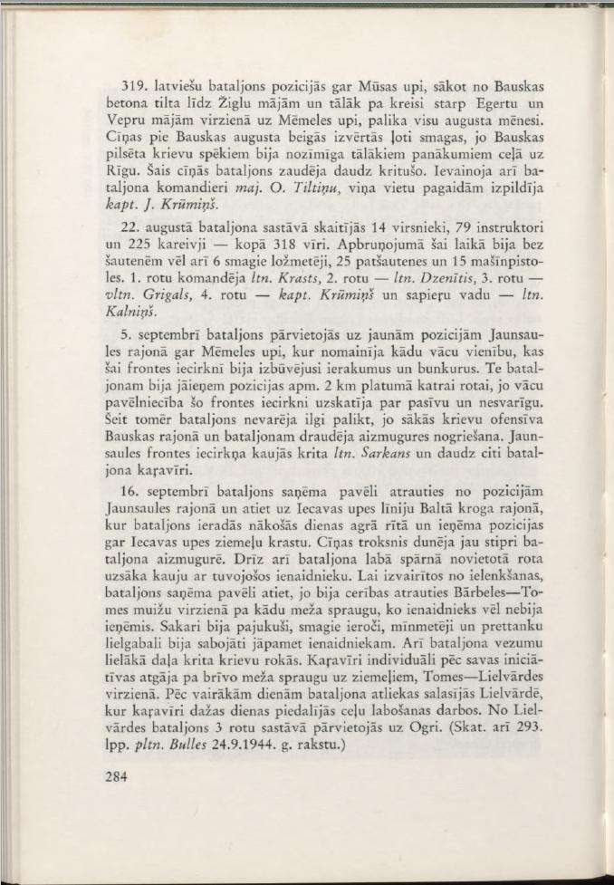
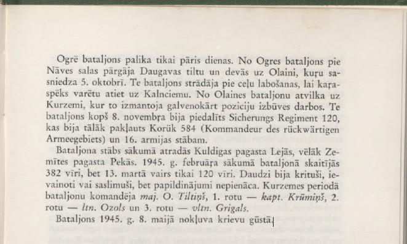

319-F. BATTALION On July 22, the 319th Battalion began to move on foot to the Daudzeva area. However, it was no longer possible to reach it, as the conditions on the front had changed rapidly. Jelgava was already burning and was under heavy fire from Russian tanks and aircraft. The battalion was directed to Bauska, which it also managed to reach on the night of July 29/30. There, the battalion took up defensive positions on the right bank of the Musa River, from the Bauska tobacco factory to Pamušai. Already on July 31, Russian forces appeared near Bauska from the Lithuanian side. The battalion, together with small German units, intercepted them on the southern outskirts of the city of Bauska. The 23rd and 322nd Battalions were also located in the Bauska area. Both battalions were part of the German ."KampfgruppeGieseke".

The 319th Latvian Battalion remained in positions along the Mūsa River, starting from the Bauska concrete bridge to the Žigla houses and further to the left between the Egerta and Vepra houses towards the Mēmele River, throughout the month of August. The fighting near Bauska at the end of August turned out to be very heavy, as the city of Bauska was important for the Russian forces for further successes on the way to Riga. The battalion lost many casualties in these battles. The battalion commander, Maj. O. Tiltiņš, also died, his place was temporarily taken by Capt. J. Krūmiņš.
On August 22, the battalion consisted of 14 officers, 79 instructors and 225 soldiers - a total of 318 men. At that time, the armament included, in addition to rifles, 6 heavy machine guns, 25 submachine guns and 15 machine guns. The 1st Company was commanded by Lt. Krasts, 2nd Company — Lt. Dzenītis, 3rd Company — 1st Lt. Grigals, 4th Company — Capt. Krūmiņš and sapper platoon — Lt. Kalniņš.
On September 5, the battalion moved to new positions in the Jaunsaule area along the Mēmele River, where it replaced a German unit that had built trenches and bunkers in this front sector. Here, the battalion had to take up positions approximately 2 km wide for each company, as the German command considered this front sector to be passive and unimportant. However, the battalion could not stay here for long, as the Russian offensive in the Bauska region began and the battalion was in danger of being cut off from the rear. Lt. Sarkans and many other soldiers of the battalion fell in the battles in the Jaunsaule front sector.
On September 16, the battalion received an order to break away from its positions in the Jaunsaule area and retreat to the Lecava River line in the Baltā Krog area, where the battalion arrived early the next morning and took up positions along the northern bank of the Iecava River. The sound of battle was already echoing loudly in the battalion's rear. Soon, the company on the battalion's right wing also began fighting the approaching enemy. In order to avoid being surrounded, the battalion received an order to retreat, as there was hope of breaking away in the direction of the Bārbele-Tome manors through a forest gap that the enemy had not yet occupied. Communications had been disrupted, heavy weapons, mortars and anti-tank guns had been damaged and had to be abandoned to the enemy. Most of the battalion's transport also fell into Russian hands. Individual soldiers, on their own initiative, retreated through the open forest gap to the north, in the Tome-Lielvārde direction. After several days, the remnants of the battalion gathered in Lielvārde, where the soldiers participated in road repair work for a few days. From Lielvārde, the battalion, consisting of 3 companies, moved to Ogri. (See also 293rd Ipp. pltn. Bulle's article of 24.9.1944.)

The battalion remained in Ogre for only a few days. From Ogre, the battalion crossed the Daugava bridge at Nāves Island and headed to Olaine, which it reached on October 5. Here the battalion worked on repairing the roads so that the troops could leave for Kalnciems. From Olaine, the battalion was withdrawn to Kurzeme, where it was mainly used for position construction work. Here, since November 8, the battalion had been assigned to Sicherungs Regiment 120, which was further subordinate to Korūks 584 (Kommandeur des rückwärtigen Armeegebiets) and the headquarters of the 16th Army.
The battalion headquarters was initially located in Lejas, Kuldiga parish, later in Pekas, Zemīte parish. At the beginning of February 1945, the battalion numbered 382 men, but on March 13, only 120 men remained. Many had fallen, been wounded, or fallen ill, but reinforcements did not arrive. During the Courland seige, the battalion was commanded by Maj. O. Tiltiņš, the 1st company by Capt. Krūmiņš, the 2nd company by Lt. Ozols, and the 3rd company by Vltn. Grigals.
The battalion was captured by the Russians on May 8, 1945.